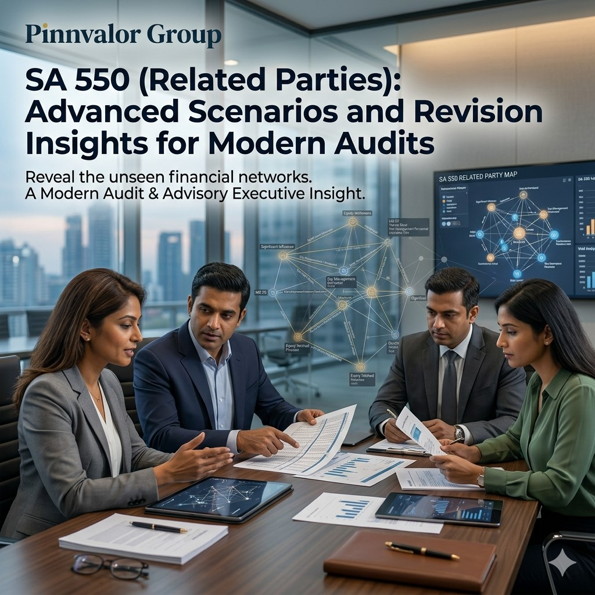

SA 550 (Related Parties): Advanced Scenarios and Revision Insights for Modern Audits
Related party transactions have always been one of the most judgment-intensive and fraud-sensitive areas in financial reporting. SA 550 (Related Parties) sets out the auditor’s responsibilities regarding related party relationships and transactions, especially when they have a significant impact on financial statements.
What would change if every related party transaction told its full hidden story?
True audit quality begins when auditors move beyond legal structures and uncover the economic reality behind complex related party relationships.
In modern audits, complexity has increased due to layered corporate structures, offshore entities, shell companies, group reorganisations, and informal influence networks. This makes SA 550 not just a compliance requirement but a critical risk detection framework.
Core Objective of SA 550
The primary objective of SA 550 is to ensure that:
- All related party relationships and transactions are identified and properly disclosed
- Financial statements are not materially misstated due to undisclosed related party influence
- Auditors maintain professional skepticism in high-risk scenarios
Why Related Party Auditing Is High Risk
Related party transactions carry high inherent risk because they may not always be conducted at arm’s length.
Key risk factors include:
- Lack of transparency in ownership structures
- Management override of controls
- Unusual pricing or non-commercial terms
- Unrecorded or undisclosed related parties
Advanced Scenario 1: Hidden Ultimate Beneficial Ownership (UBO)
One of the most complex challenges is identifying the Ultimate Beneficial Owner behind multiple layers of entities.
Example scenario:
- Company A transacts with Company B, registered in an offshore jurisdiction
- Company B is controlled through trust structures or nominee shareholders
Audit Focus Areas:
- Tracing ownership beyond legal form to economic substance
- Reviewing KYC documents, shareholder agreements, and board minutes
- Using external confirmations and independent verification sources
Advanced Scenario 2: Management-Controlled Entities (MCEs)
Sometimes entities are not formally related by ownership but are effectively controlled by key management personnel.
Common red flags include:
- Frequent transactions with vendor companies linked to executives’ relatives
- Non-standard pricing policies without justification
- Lack of competitive bidding or procurement process
Audit Procedures:
- Detailed review of governance disclosures
- Inquiry with audit committee and internal audit teams
- Verification of vendor onboarding documentation
Advanced Scenario 3: Round-Tripping of Funds
Round-tripping involves routing funds through related entities to artificially inflate revenue or cash flows.
Typical structure:
- Entity A invests in Entity B
- Entity B returns funds disguised as sales or service income
Audit Focus:
- Substance over form evaluation
- Cash flow tracing across related entities
- Analytical procedures on revenue patterns and anomalies
Advanced Scenario 4: Undisclosed Related Party Guarantees
Companies may provide guarantees or collateral support to related parties without proper disclosure.
Potential impact includes:
- Unrecorded contingent liabilities
- Misstatement of financial position strength
Audit Procedures:
- Review of loan agreements and bank confirmations
- Inspection of board resolutions
- Legal confirmation letters and external verification
Revision Insights for SA 550
For exam and practical revision, focus on the following key areas:
- Definition and identification of related parties, including indirect relationships
- Responsibilities of management vs auditors
- Risk assessment procedures and fraud indicators
- Disclosure requirements under applicable accounting standards
- Sufficiency and appropriateness of audit evidence

Key Audit Mindset Under SA 550
The most important principle is maintaining professional skepticism throughout the audit process.
Auditors should:
- Look beyond legal ownership structures
- Focus on economic substance over form
- Challenge unusual or complex transactions
- Corroborate management representations with independent evidence
Conclusion
SA 550 goes beyond identifying related parties—it focuses on understanding control, influence, and intent behind transactions.
In modern audits, where financial structures are increasingly complex, applying SA 550 effectively ensures transparency, reduces fraud risk, and strengthens overall audit quality.